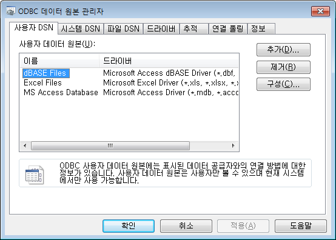
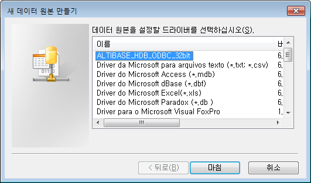
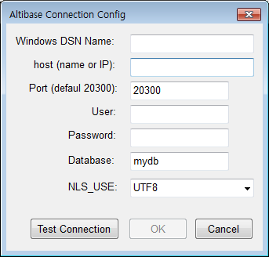
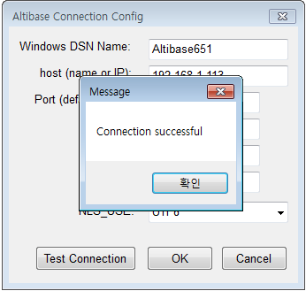
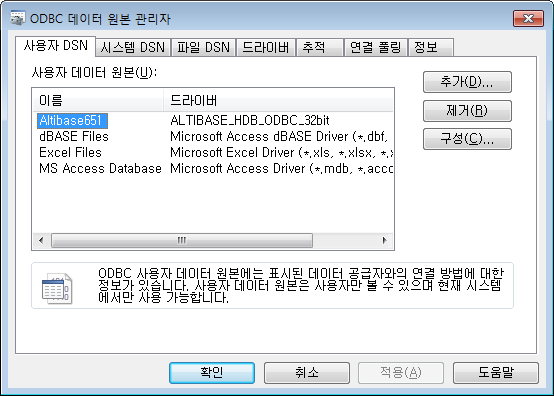

Overview
This document describes how to set up 32-bit ODBC driver on Windows Server 2003 64-bit systems.
Version
~ Altibase 6.5.1
Altibase ODBC installation
- Download the Windows Altibase 32-bit client installation file or the Altibase 32-bit ODBC installation file.
Download: http://support.altibase.com/en/product
Client installation file name example: altibase-HDB-client-x.x.x.x.x-WINDOWS-X86-32bit-release.exe
ODBC installation file name example: altibase-HDB-ODBC-x.x.x.x.x-WINDOWS-X86-32bit-release.exe - Install the Windows Altibase 32-bit client.
For the installation method, refer to 2. Product Installation Using Package Installer -> ALTIBASE HDB Client Product Installation in Windows in the Installation Guide manual.
Manual download: http://support.altibase.com/en/manual
ODBC Setting
- Run the data source manager for 32-bit ODBC.
Double-click C:\windows\sysWOW64\odbcad32.exe.
 - Create a new data source
Click the 'Add' button in the user 'DSN tab' of the ODBC Data Source Administrator window to open the Create New Data Source window.
Select the Altibase 32-bit ODBC driver and click 'Finish'.
 - When the 'Altibase Connection Config' window appears, enter the Altibase server connection information.

● Windows DSN Name
Enter a custom name for the data source.
● host (name or IP)
Enter the IP of the Altibase server.
● Port (default 20300)
Enter the service port of the Altibase server
Check the value of PORT_NO in the altibase.properties file (Altibase server properties file) or the value of the ALTIBASE_PORT_NO environment variable on the Altibase server.
● User
Enter the database user name.
● Password
Enter the database user password.
● Database
Enter the database name.
The database name can be checked with SELECT_DB_NAME FROM V$DATABASE;
● NLS_USE
Enter the Altibase server character set.
The Altibase server character set can be checked with NLS_CHARACTERSET FROM V$NLS_PARAMETERS; - Click the Test Connection button to check the connection.
 - Check the Altibase DSN added to the User DSN tab.

{kind=link}
{kind=link}
{kind=link}
{kind=link}
{kind=link}